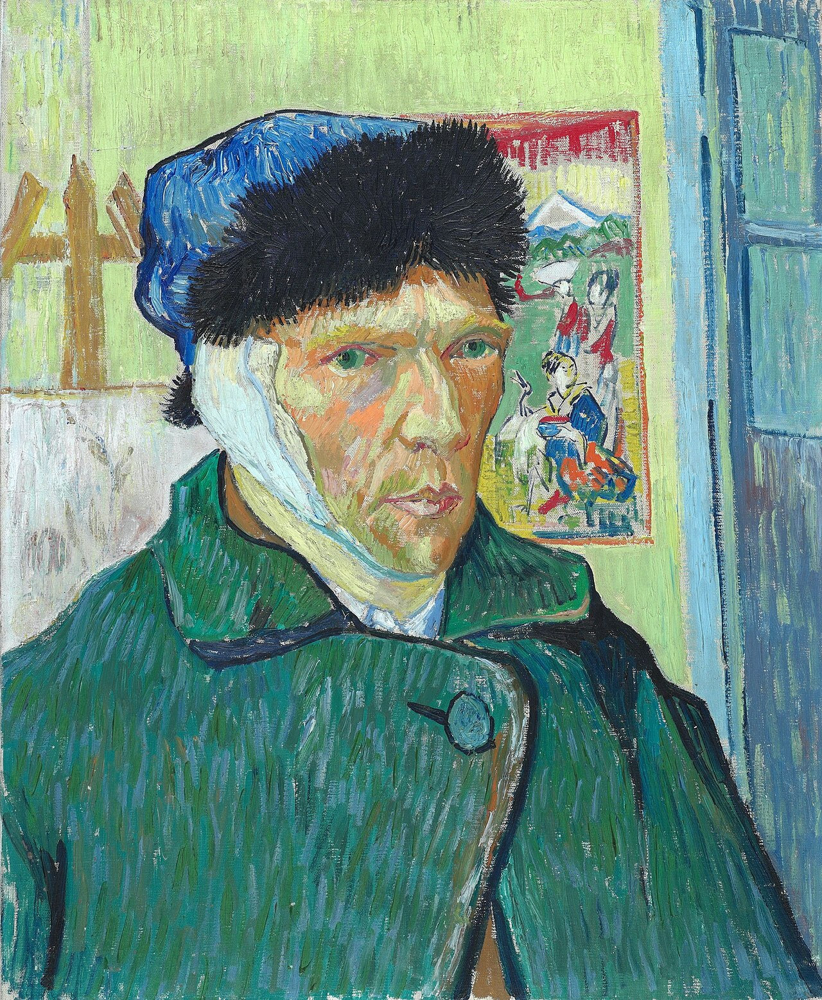

Fig. 1 — Vincent van Gogh, Self-Portrait with Bandaged Ear, gennaio 1889, olio su tela, 60 × 49 cm. Courtauld Gallery, Londra.
Van Gogh a Theo, 17 gennaio 1889 (lettera 736), dieci giorni dopo la dimissione dall'ospedale. Fonte: Van Gogh Letters Project — traduzione inglese.
| Autore | Vincent van Gogh |
|---|---|
| Data | gennaio 1889 |
| Tecnica | olio su tela |
| Dimensioni | 60 x 49 cm |
| Catalogo | F527/JH1657 |
| Collezione | Courtauld Gallery, Londra |
| Luogo di creazione | Arles |
Dipinto nei giorni immediatamente successivi alla dimissione dall'ospedale di Arles, dopo l'episodio dell'auto-mutilazione dell'orecchio del dicembre 1888 in seguito ad una lite con Gauguin, quest'opera è una dimostrazione visiva dei turbamenti interiori dell'artista. Nel dipinto appare fasciato l'orecchio destro, ma si tratta di un effetto specchio; l'artista si è infatti ritratto guardandosi riflesso, in una posa composta che sembra contrastare con la violenza dell'episodio vissuto. Tuttavia, nonostante questo, Van Gogh riprende subito a dipingere, come segnala lui stesso nella lettera a Theo, in una volontà evidenziata anche dagli oggetti che compaiono sul fondo e che assumono un significato simbolico: un cavalletto con una tela e una stampa giapponese, simbolo della sua grande fonte di ispirazione, tutto realizzato con potenti colori e pennellate.
Arricchimento — record di autorità
File collegati
Risorse esterne